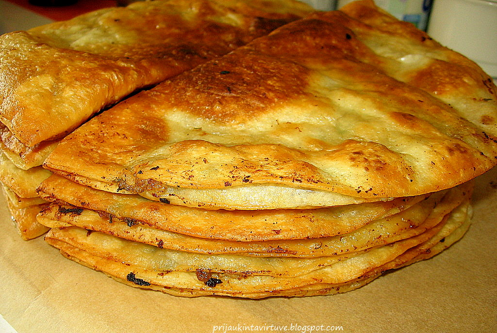

Welcome to Virtuvė
virtuvė - išsamiai DELFI.lt
2020.10.28 08:06Spalio 28 d., trečiadienis | Vilnius 12 Kaunas 9 Klaipėda 10 Šiauliai 8 Panevėžys 9 Alytus 10 Nida 9 Raseiniai 7 Utena 9 Mažeikiai 8 Biržai 8 Kėdainiai 8 Kiti miestai Paieška | Pranešti naujieną | LT RU EN | Reklama Kontaktai | Statistika | + Apie Delfi plius Prisijungti Naujausios Skaitomiausios Lietuvoje Sportas Orai Kriminalai Užsienyje Veidai Horoskopai Gyvenimas Mokslas Verslas Daugiau Sveikata Kultūra Auto M360 Politiko akimis Jaunimas Pilietis Nuomonių ringas Multimedija Teisė Medijos Karas Propaganda PT Melo detektorius Demaskuok Ačiū už pamokas Temos | Delfi Video
Naujienos
Naujausios Skaitomiausios Lietuvoje Sportas Kriminalai Užsienyje Veidai GyvenimasVerslas Mokslas Kultūra Sveikata Auto Pilietis Miestai M360 Politiko akimis
Delfi Video
Tiesioginės transliacijos Delfi Diena Delfi Dėmesio centre LaidosNaudinga
Orai Horoskopai Receptai TV Programa Valiutų kursaiDelfi projektai
Multimedija Idėja Lietuvai Kablys Smalsūs EP Atsakingas požiūris Atgal į gyvenimąDelfi kanalai
Agro Būstas Moterys Šeima Kelionės Grynas Stilius Maistas Letena Karjera Bored Panda Sek DelfiMobilusis Delfi
Naujausios žinios Naujienų temos Delfi Temos virtuvė
virtuvė
Virtuvė – patalpa, skirta maistui ruošti; pastato (namo), kitokio statinio (pvz., karinės palapinės) gastronominės paskirties vieta. Gali būti „vidinė“ ir „išorinė“ (pvz., lauko) virtuvė.
11 dažniausiai pasitaikančių klaidų virtuvėje (12)
Namų šeimininkai turi teisę daryti savo namuose viską, ką tik užsimano. Tačiau kartais, siekdami gražesnių ir jaukesnių namų, mes pamirštame...
Ką daryti, kad atsiskyrimas nuo mamos ar tėčio vaikui nekeltų streso: žingsniai, kurie padės atsisveikinti be ašarų
Tėvai gali pasitelkti tam tikras strategijas, kad įpratintų poros metų amžiaus vaiką pabūti atskirai nuo tėvų ir pasilikti su aukle ar darželyje....
Naujos izoliacijos sąlygos apibrėžtos iki smulkmenų: taisyklės galioja ir šeimos nariams (366) 4198
Izoliuojantis namuose arba kitose gyvenamosiose patalpose galioja griežtos taisyklės. Pavyzdžiui, tokiu atveju kartu negali gyventi kiti asmenys, o, jeigu...
5 patarimai, kaip išsirinkti naują viryklę: grožis neturi nugalėti praktiškumo (8)
Nėra paprasta išsirinkti reikiamą įrangą virtuvei, bet be viryklės vargu ar išsiversite. Juk kasdienis maisto užsisakymas į namus – ne toks jau...
Stipriausiųjų virusas neima, arba kaip Užkalnis 400 eurų vakarienei išleido (204) 126
Kalbant apie stipriausius, aš turiu omenyje ne save, o restoraną “ Gastronomika ”. Dar prieš karantiną restoranas persikraustė į Senamiestį,...
Paveldėjus NT užgriūva didesni mokesčiai: vien už registravimą susimokėjo apie 900 eurų (400) 627
Nusikelkite į Meksiką: burnoje tirpstantys kukuliai (5)
Pavilnyje planuojamas išskirtinis pastatas: įkurs oranžeriją bei edukacijų centrą (2) 106
Virtuvės šefas išvardijo ingredientus, kurie nukels jus tiesiai į Pietų Ameriką: namiškiai ir svečiai liks sužavėti trys receptai (7) 145
Ekspertas įvertino beveik 50 metų senumo buto būklę: šie ženklai praneša apie dideles išlaidas (63)
Estijos ir Latvijos turistų tyrimas: keliauti motyvuoja noras ištrūkti iš pažįstamos aplinkos
„Scanorama“ pandemijos fone parengė atsarginius bėgius (1)
Orijus Gasanovas pasidalijo idėja, kaip pajusti Ameriką, neiškėlus kojos iš namų: tą galite kiekvienas + klasikinio mėsainio receptas (25)
Tinklaraščio „Ant medinės lentelės“ kūrėja: vaiko gimimas padėjo atrasti itin greitus ir subalansuotus receptus RECEPTAI (9)
Virtuvės šefas šrilankietis Dilan jau 10 metų gyvena Lietuvoje: papasakojo, kokie patiekalai jums padės pasijusti it egzotiškose šalyse (20)
Socialinėje globoje dirbu 20 metų – yra keli neatitikimai, dėl kurių kenčia globotiniai (15)
Alantos dvaras – itališka vila Molėtų rajone: rudens spalvomis nusidažęs įspūdingas parkas nepaliks abejingų (22) 456
Netrukus prasidės Lietuvos gastronomijos savaitė: prašmatniausi restoranai kvies atrasti nacionalinio meniu patiekalus (20)
Žąsų kepenėlių pašteto gamintojai tikisi pagerinti pardavimus Kalėdų laikotarpiu (2)
Kavos namams Vilniuje teko užsidaryti vos po trijų mėnesių: kaip reikiant nustebino rugsėjis (15)
Namų apšvietimo taisyklės: būtina žinoti, planuojantiems interjerą ir eksterjerą
Alekna apie darbo Brazausko asmens sargybiniu užkulisius: slapyvardžiai, skaičiais koduoti pokalbiai ir priverstinės „atostogos“ su prezidentu (103) 140
Į Lietuvą atvykęs japonų virtuvės šefas paneigė plačiai paplitusį mitą
Traškus izraelietiškas kalafiorų užkandis: išdavė receptą, kaip pasigaminti jį per 5 minutes (29)
Kaip išsirinkti pačią geriausią keptuvę: išsamus gidas ir patarimai (15)
Lietuvoje startuoja unikalus projektas: dalyvauti kviečiami visi, kurie svajoja sėsti į ralio automobilį 303
Pačiame Kauno centre – nuo lietaus mirkstantys butai: pirmas butų ūkio atsakymas nustebino (46)
Orijus Gasanovas gamina greitą vakarienę draugams: ši virtuvė Lietuvoje dabar ypač populiari VIDEO (3)
Pristato užkandį, kuriuo galėsite mėgautis be sąžinės graužaties (3)
Kaip šiltnamyje dar spėti užauginti antrą derlių instrukcija
1 2 3 4 5 6 7 8 9 10 | Populiariausi straipsniai ir video Sekite DELFI REKLAMA KONTAKTAI PRIVATUMAS KARJERA en.delfi.lt ru.delfi.lt pl.delfi.lt delfi.ee rus.delfi.ee delfi.lv ru.delfi.lv UAB DELFI Gynėjų g. 16, 01109 Vilnius +37052045400 info@delfi.lt © 1999-2020 DELFI. Visos teisės saugomos .